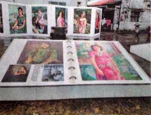

三峽「梅樹月」 今祖師廟廣場揭幕
劉彥甫｜自由時報／新北都會新聞∣2014年3月15日
二○一四年三峽「梅樹月」將於今日下午二時在祖師廟前廣場正式揭開序幕。今年梅樹月擴大串聯了三峽十九處藝文展演據點、六十五位跨世代藝術家共襄盛舉。自即日起到四月十四日止，民眾到宰樞廟、三峽歷史文物館、甘樂文創等展點，就可一睹李梅樹原作「翻牆」，自紀念館「出走」到戶外展出。
梅樹月將在李梅樹紀念館、三峽圖書館、三峽教會、庭園別墅美術館、白雞山美術館等十九處藝文展演據點，展出十九個不同主題、六十五位跨世代藝術家作品。而展點之一的李梅樹紀念館更以大師對話為主題，首次將林玉山、郭雪湖、陳澄波、楊三郎原作，集結於紀念館內。
在這批價值上億的藝術品中，以陳澄波的《淡水寫生合畫》最為特別。這幅由上述大師與李梅樹共赴淡水合畫的作品，原作背面集體落款的字跡相當完整，台灣早期藝術界「天才世代」的人際網絡與歷史，只有在梅樹月才看的到。另外，複製輸出的李梅樹作品，大量的在戶外展出，也成了今年梅樹月展示的一大特色。
活動當天除了有台灣民謠大師陳明章演唱民謠，還有三峽社大的ＪＣ非洲鼓團帶來非洲鼓組曲，而曾榮獲金曲獎、金馬獎的創作歌手張羽偉與焦炭樂團，也會演唱梅樹月主題曲「台灣畫壇ㄟ國寶─李梅樹」。